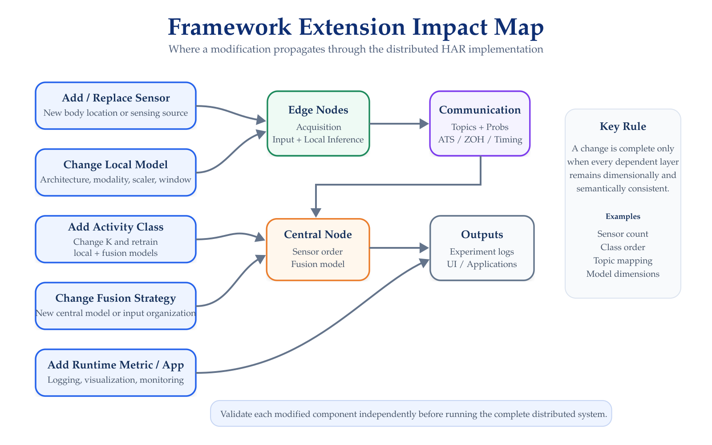
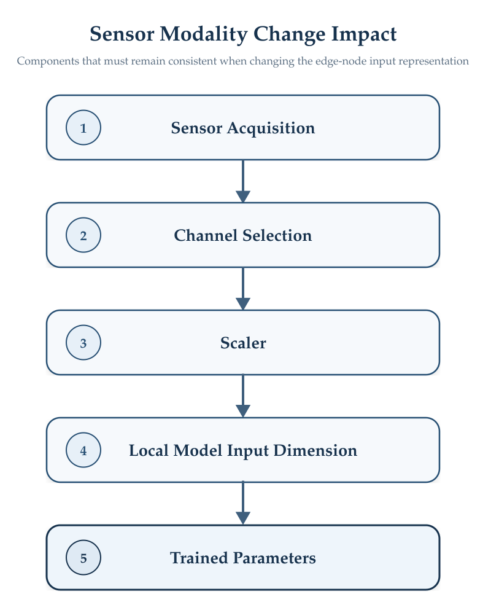

Extending the Framework
Modifying Sensors, Models, Fusion, and Runtime Components
The HAR Distributed Framework was designed as a modular distributed system in which sensing, local inference, communication, central fusion, logging, and visualization are separated into independent components.
This organization makes it possible to modify individual parts of the system, but changes must remain consistent across all dependent layers.
Extension Impact
A modification introduced in one part of the framework may require corresponding changes elsewhere. The main dependencies are summarized in Figure 1.

The most important rule when extending the system is:
A modification is complete only when the sensing configuration, model dimensions, communication structure, fusion input, and outputs remain mutually consistent.
Before Modifying the Framework
Before implementing a change, identify which layers are affected.
| Modification | Components to Review |
|---|---|
| Add a wearable sensor | Edge node, ROS topic, central synchronization, fusion model, logging |
| Replace a sensor modality | Acquisition, preprocessing, scaler, local model |
| Replace a local model | Input preparation, model definition, model file, output dimension |
| Add an activity class | All local models, K, central fusion model, UI class mapping |
| Change the fusion model | Central model definition, sensor order, fusion input dimension |
| Change synchronization | Central node, ATS/ZOH parameters, timing evaluation |
| Add a runtime metric | ROS message if needed, experiment manager, log files, analysis |
| Add a new application | Subscribe to existing outputs or define a new interface |
Changes should be validated incrementally before executing the complete distributed system.
Adding a New Wearable Sensor
Adding another sensing location requires more than creating a new sensor connection.
A new branch must provide the same functional stages used by the existing edge nodes:
- Sensor Acquisition
- Input Buffering
- Preprocessing
- Local Inference
- Prediction Generation
- ROS Publication
The new node requires a unique:
sensor_id
and prediction topic, for example:
/har/probs/<new_sensor>
The physical sensor should also have a fixed relationship among:
- Bluetooth Address
- Body Location
- Edge Computing Device
- Sensing Modality
- Trained Local Model
Sensor preparation is described in Wearable Sensor Setup.
Central Changes
The central implementation maintains an explicit sensor organization for the distributed prediction streams.
Therefore, adding a sixth sensor requires updating the central node so that the new stream participates in:
- ROS Subscription
- Prediction Caching
- Synchronization
- Fallback Operation
- Sensor Ordering
- Fusion-Input Construction
Adding a new ROS topic without retraining or adapting the fusion model is not sufficient.
The central model must be compatible with the new fusion-input dimension.
If each local classifier produces K probabilities, the fusion-input dimension is:
Number of sensors × K
For the current configuration:
5 × 6 = 30
If a sixth sensor were added while retaining six classes:
6 × 6 = 36
The fusion model would therefore require a compatible 36-value input and new trained parameters.
Replacing a Wearable Sensor
A physical sensor can be replaced without changing the distributed architecture if the replacement provides equivalent information and the acquisition component produces the same model input representation.
Verify:
- Sensing Modality
- Axis Ordering
- Units
- Sampling Frequency
- Timestamp Behavior
- Communication Interface
- Preprocessing
A replacement sensor should not be considered interchangeable merely because it provides accelerometer, gyroscope, or orientation data.
The numerical representation must remain compatible with the trained model.
Changing the Sensor Modality
The existing local implementations use sensor-specific input representations.
Changing a branch from one representation to another affects. The components affected by a change in sensing modality are illustrated in Figure 2.

For example, changing from a four-channel quaternion representation to a six-channel accelerometer–gyroscope representation requires a model whose first layer accepts the new input dimension.
It normally also requires a scaler trained using the new feature organization.
Do not reuse a scaler created for a different sensing modality.
Replacing a Local HAR Model
A local model can be replaced with another neural architecture as long as the edge-node interface remains compatible with the rest of the distributed system.
The replacement model must define:
- Expected window shape
- Number and ordering of input channels
- Preprocessing
- Output class order
- Number of output classes
The distributed communication layer expects the local classifier to produce a probability vector.
For the current system:
K = 6
Therefore, a compatible replacement model should produce:
[p0, p1, p2, p3, p4, p5]
unless the complete system is also updated for a different number of classes.
The local architecture itself does not need to remain CNN-LSTM.
Possible future alternatives could include:
CNN
LSTM
GRU
Transformer
Temporal Convolutional Network
Lightweight Edge-AI architectureprovided that the runtime input and output interfaces are adapted accordingly.
Changing the Window Configuration
The current models were developed around a fixed temporal input representation.
Changing:
WINDOW_SIZE
or the effective sampling rate changes the temporal context presented to the model.
For example:
50 samples at 50 Hz ≈ 1 second
A different window length should therefore be treated as a model-level change rather than only a runtime parameter adjustment.
The following must remain consistent:
- Sensor Acquisition Rate
- Buffer Size
- Preprocessing
- Model Input Dimensions
- Scaler
- Training Configuration
- Deployed Model Parameters
Adding Activity Classes
Adding or removing an activity modifies the classification dimension:
K
This affects both levels of the distributed architecture.
Local Models
Every local classifier must produce the same updated class vector.
For example, moving from: 6 classes
to: 7 classes
changes each local output from: 6 probabilities
to: 7 probabilities
Central Fusion
With five sensors: 5 × 7 = 35
probabilities would then be provided to the fusion model.
The central model must therefore be retrained with: 35 inputs
and: 7 outputs
Other Components
The change must also propagate to:
- Class-ID Mapping
- Visualization Labels
- Logging Interpretation
- Evaluation Scripts
- Any External Application Consuming the Predictions
Class order must remain identical across all local models, the fusion model, logs, and visualization.
A numerically valid probability vector with a different class ordering will produce semantically incorrect results.
Changing the Central Fusion Strategy
The current framework performs prediction-level fusion after concatenating the five local class-confidence vectors.
A different central strategy can be introduced without modifying the physical sensing layer.
Possible extensions include:
- A deeper MLP;
- Weighted probability fusion
- Confidence-aware fusion
- Attention-based fusion
- Uncertainty-aware fusion
- Temporal fusion of consecutive prediction vectors
- Rule-based decision fusion
The current central implementation constructs the fusion input using a fixed sensor order.
That order is semantically significant because the fusion model associates each section of the input vector with a particular sensing location.
Therefore, changing the order without retraining the model must be avoided.
Changing the Number of Edge Nodes
The central implementation currently maintains explicit references to the five distributed sensing streams.
Changing the number of edge nodes requires reviewing:
SENSOR_ORDER
TOPIC_BY_SENSOR
ROS subscribers
ApproximateTimeSynchronizer inputs
ZOH cache
Fusion input dimension
Experiment-manager local topicsThe synchronization layer must also be adapted because ATS operates over the complete set of subscribed prediction streams.
Modifying Synchronization
The central implementation exposes several parameters that control normal synchronization and fallback behavior:
SYNC_SLOP_SEC
QUEUE_SIZE
CENTRAL_RATE_HZ
FRESH_MAX_AGE_SEC
ZOH_MAX_HOLD_SEC
FAILOVER_SEC
RECOVER_STABLE_SEC
STARTUP_GRACE_SECThese parameters should not be changed independently without evaluating their system-level consequences.
For example, reducing the ATS tolerance may improve temporal alignment but may also:
- Reduce the number of accepted fusion events;
- Increase fallback activation; and
- Affect prediction throughput.
Similarly, increasing the ZOH hold duration allows longer interruptions to be tolerated but increases the time during which stale local information may influence the central prediction.
Any synchronization modification should therefore be evaluated using the metrics described under Experiments & Logs.
Replacing ROS
The architecture is conceptually independent of ROS as long as the replacement communication layer can provide:
- Distributed Message Exchange
- Source Identification
- Ordered Prediction Vectors
- Timestamps
- Timing Metadata
- Temporal Coordination
A different implementation could therefore use another middleware or transport protocol.
However, replacing ROS requires reproducing the responsibilities currently provided by:
- Topic-based publication and subscription
- Custom probability messages
- Execution-control signals
- Temporal synchronization
This should be treated as an architectural modification rather than a simple networking change.
Adding New Runtime Metrics
The experiment-management layer can be extended with additional measurements.
Examples include:
- CPU Utilization
- GPU Utilization
- Memory Usage
- Temperature
- Prediction Throughput
- BLE Packet Statistics
- Network Traffic
- Per-Node Power Consumption
- Synchronization-Mode Occupancy
A new metric should normally include:
- Measurement Source
- Acquisition Method
- Timestamp
- Unit
- CSV Field or Dedicated Log
- Post-Processing Method
Avoid adding expensive instrumentation directly inside inference-critical sections unless its overhead has been evaluated.
Extending Experiment Logs
The current experiment manager can be modified to record additional fields.
If a new field is required from another processing stage, determine whether it should be:
- Calculated directly by the experiment manager
- Propagated through
har_msgs/Probs - Published through an independent ROS topic
Not every measurement should be added to Probs.
Classification and timing information directly associated with a prediction belongs naturally with the prediction message, whereas independent system-monitoring information may be better represented through separate channels.
Adding Ground Truth
The current experiment-manager implementation records the predicted label but does not independently generate the ground-truth activity label.
A future extension can integrate ground truth through a dedicated experiment-control mechanism.
A ground-truth implementation should provide at least:
run_id
timestamp
activity_idor an equivalent temporal representation that allows activity labels to be aligned with the recorded global predictions.
This would make the experiment output directly suitable for classification evaluation without requiring manual label merging afterward.
Extending the Visualization
Applications should preferably consume the global prediction interface rather than communicate directly with individual local models.
The current framework already separates global inference from visualization.
A new application can therefore use the global output as an integration point for:
- Dashboards
- Mobile Interfaces
- Rehabilitation Systems
- Robotics
- Activity Monitoring
- Alerts
- External Data-Recording Systems
If the number or ordering of activity classes changes, the application-side mapping must also be updated.
Recommended Development Procedure
When extending the framework:
- Define the modification and affected interfaces.
- Modify only the required component initially.
- Test that component independently.
- Verify dimensions and message formats.
- Integrate it with the next downstream component.
- Verify ROS communication.
- Verify synchronization when applicable.
- Run the complete framework.
- Inspect the generated logs.
- Compare the modified behavior with the original implementation.
Keep the original working implementation available while developing an extension.
This provides a reference configuration for identifying whether a problem originates from the new component or from the surrounding distributed infrastructure.
Compatibility Checklist
Before considering an extension complete, verify:
[ ] Sensor representation is correct
[ ] Sampling configuration is correct
[ ] Window dimensions are correct
[ ] Scaler matches the input features
[ ] Local model architecture matches its weights
[ ] Local output dimension matches K
[ ] Class ordering is identical everywhere
[ ] ROS topic mapping is correct
[ ] Probs message remains compatible
[ ] Sensor order at the central node is correct
[ ] Fusion input dimension is correct
[ ] Fusion model matches its weights
[ ] Synchronization still operates correctly
[ ] Fallback behavior still operates correctly
[ ] Global prediction is generated
[ ] Logging captures the required information
[ ] Visualization interprets the output correctlyNext Step
Continue with:
The final section consolidates common deployment and runtime failures and identifies the component that should be inspected first for each problem.